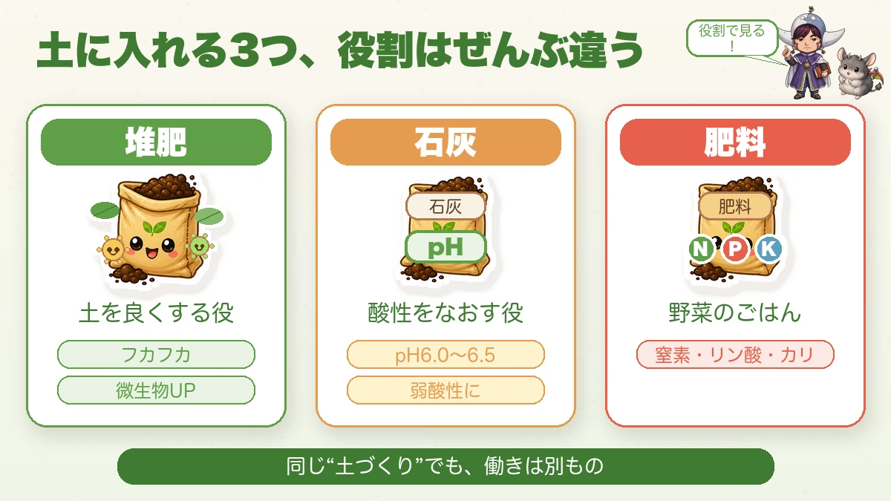
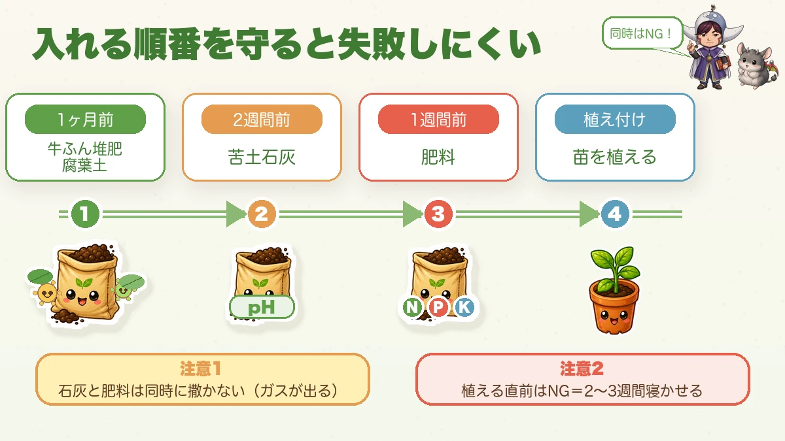
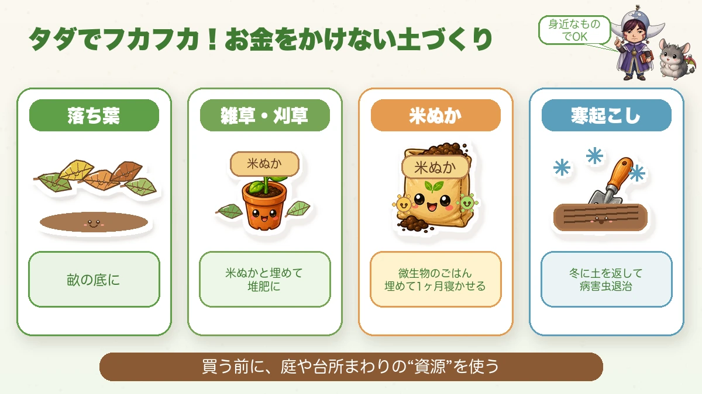

有機・無農薬の土づくり手順帳｜堆肥選び・待つ期間・土の診断
📖 この記事の目次
この記事で分かること
- 最初の仕事は資材を買うことより、土の硬さ、水の残り方、前作の根を確かめることです。
- 堆肥は土の性質を整えるため、肥料は栄養を補うために選びます。名前が似ていても、同じ量で交換しません。
- 石灰を入れるかは育てる野菜と酸度で判断します。土づくりのたびに自動で足すものではありません。
- 植えるまでの間隔には約2週間、2〜3週間、2週間〜1か月、1か月以上という説明があります。使う材料と季節をそろえて考えます。
- 落ち葉やもみ殻を使うなら、分解する時間まで計画に入れます。身近な材料でも、今日埋めて明日植える段取りにはしません。
- 『握れば崩れる』は観察の一つです。水はけ、根の伸び、資材の状態も合わせて見て、植える準備を判断します。
「何を何袋買えばええんやろ」。土づくりの売り場で迷いやすいのが、ここですよね。けれど、袋を増やす前に決めたいことがあります。『どんな土に、何を植え、いつ植えるのか』。この三つです。
同じ土づくりでも、新しく借りた硬い畑と、毎年野菜を育てている場所では出発点が違います。冬から春まで空けられる場所と、来週に苗を植えたい場所でも、使える材料は変わります。万能の配合を覚えるより、手元の条件に合わせるほうが作業を選びやすいんです。
8150（えいこう）です🌱 ふだんは理科を教えています。このページでは、土づくりを『観察』『資材選び』『作業』『植える前の確認』に分けます。これから始めるみなさんは早見と手順を、すでに苗の調子が気になるみなさんは症状の章を使ってください。必要なところへ戻れる形にしておきます。
大切なのは、無農薬だから土だけで何もかも解決できる、と考えないことです。根が育つ環境を整える仕事と、虫や病気の原因を調べる仕事は別にあります。土は大事。でも土に全部の責任を背負わせるのも、ちょっと酷なんですよね☺️
早見：有機・無農薬の土づくり（ひと目で分かる数字）
日数・深さを読む前にそろえる条件
- 土づくりの開始日：種まき・植え付けの日から逆算します。作物共通の開始月はなく、空けられる期間で材料を選びます。
- 堆肥を入れる時期：栽培開始の1か月以上前とする説明があります。一方、堆肥や肥料を入れて約2週間待つ手順もあります。完熟度や配合を省いて、日数だけ移し替えないようにします。
- 未熟な堆肥を使う場合：2週間〜1か月の間隔を取る説明があります。ただし、この日数でどんな材料も使える状態になる、という保証ではありません。
- 作物別の準備例：秋じゃがいもは植える2〜3週間前までに土づくりを終える説明があります。これを春夏野菜のすべてに共通する締め切りにはしません。
- 春夏野菜向けの待機例：有機物を混ぜたあと約3週間を取る方法があります。土が冷たい時期や、材料が大量に残る場合まで一律には扱えません。
- 石灰を先に入れる方法：堆肥・肥料と分ける説明では、約2週間、できれば1か月ほどの間隔を取ります。同時に扱える種類もあるという別の説明があり、詳しくは両論の章で整理します。
- 深い硬い層への作業：約30cmまでスコップを差し、硬い層に割れ目を作る手順があります。全体を30cmの深さまで細かく砕く指示とは違います。
- さらに深く掘る例：約50cmの深さで土壌改良を行う例があります。深い硬い層を対象にした作業なので、すべてのうねに必要な標準作業にはしません。
- 資材の投入量：すべての野菜・土に共通する袋数は決められません。製品の表示、使う面積、栽培する野菜、過去の投入量を合わせて確認します。
- 石灰による酸度調整：一律の量や一律の目標値を決めず、作物ごとの条件と測った酸度を照らし合わせます。じゃがいもには石灰を基本的に使わない栽培説明もあります。
- うね幅・株間：土づくりだけでは決まりません。次の野菜の配置、通路、水が抜ける方向を確認してから形にします。
- 自作堆肥の期間：段ボールを使う方法には約半年という見込みがあります。半年たてば完成品と同じになる、という実績の数字ではありません。
- 連作の間隔：何年間空ければ土が戻る、という共通の年数はここでは設定しません。前作の種類と病気の履歴を記録し、次の野菜の栽培条件で判断します。
数がたくさん出てきますが、全部をカレンダーに書き込む必要はありません。みなさんが採る方法に関係する数字だけ拾ってください。堆肥一般の『1か月以上』と、特定の作業の『約2週間』を平均して『3週間なら何でもOK』にすると、材料の違いが消えてしまいます。
買う前に、資材の役割を分ける
- 土の状態を整えたい：堆肥などの土壌改良に使う材料を検討します。水、空気、根が動ける空間を整える目的です。
- 養分を補いたい：次の野菜に合わせて元肥を考えます。元肥は栽培の最初に用意する肥料のことです。
- 酸度を調整したい：現在の酸度と作物の条件を確認し、石灰資材を使うか決めます。
- 身近な有機物を利用したい：落ち葉、草、もみ殻などの状態と、分解に使える時間を確認します。

役割は分けられますが、袋の中身まできれいに三つに分かれるわけではありません。堆肥にも養分は含まれますし、家畜ふん由来の材料には肥料的な働きが強いものもあります。『堆肥を買ったから肥料の計算から外す』とはしないでください。
例えば、土を柔らかくしたくて入れた材料に養分が多ければ、そのうえから元肥をいつもの量だけ加えると、栄養補給が重なります。逆に、繊維の多い材料を入れただけで、次の野菜に必要な養分まで足りたとは判断できません。袋の名前は入口で、中身と目的の確認が本番です。
手元に残す、短い作業メモ
- 次に育てる野菜と、植えたい日を決めた
- いつ何を入れた場所か確認した
- 材料の名前、完熟表示、使用量、使用時期を読んだ
- 面積に合わせた量を決めた
- 作業後に観察する日を予定に入れた
メモは『○月○日、どの場所に、何を、どれだけ』が残れば十分です。後で苗の調子が悪くなったとき、投入日と植え付け日を見比べられます。袋を片づける前に表示を写真に残すのも便利。記憶だけで材料を混ぜるより、次の判断がずっとラクになります。
作業の手順（時期の順）
1．植える日と、次の野菜を決める
- 種まきか苗の植え付けかを決め、予定日を書きます。
- 次に育てる野菜のうね幅、株間、元肥の考え方を確認します。
- 前作を片づけられる日から予定日まで、何日空けられるか数えます。
- 準備期間が短ければ、未分解の有機物を新しく大量投入する計画を見直します。
土づくりを先に済ませてから野菜を選ぶと、その野菜に不要な材料まで入れやすくなります。例えば、酸度調整を一律に進めたあとでじゃがいもに決めると、作物の条件とのすり合わせが後回しになります。土の準備にも、次のお客さんの予定がいるんですね。
追肥の予定も、この段階で別に考えておきます。栽培中に追加する肥料が追肥です。追肥の量や回数は野菜によって変わるので、土づくりで先に全部を詰め込む発想にはしません。長く育てる野菜でも、長い期間の栄養を最初に全部入れればよいとは限りません。
2．前作の残りを確認し、観察する場所を作る
- 収穫後に残った根、茎、いもなどを見て、次の作業の邪魔になるものを拾います。
- 根の張り方を確認します。広がっていたか、浅い部分に集中していたかを見ます。
- 土を少し掘り、表面の土と下の土の硬さが違うか確かめます。
- 雨のあとに水が残る場所、乾きやすい場所、足で踏む場所を分けて記録します。
前作の根は、土の中の様子を知る手がかりになります。ただし、短い根を見つけただけで土が原因と決めないでください。作物の種類、育てた期間、根の傷みでも姿は変わります。『下に行けなかった可能性がある』と考えて、その下の土を見に行く流れです。
じゃがいものあとでは、小さないもが土に残ることがあります。次の野菜の間から芽が出ると、片づける手間が増えます。耕すときに出てきたものは拾い、根を食べる幼虫を見つけた場合もその場で確認します。土に材料を足す前の、地味やけど大事な下準備です。
病気が疑われる残りを、健康な落ち葉や草と同じ感覚で埋めてしまうのも避けたいところです。このページでは病気の種類ごとの処理法までは決めません。症状のある根や茎は分けておき、何の問題だったかを確かめてから扱いを選びます。
3．硬い土と、濡れた土を見分ける
- 表面の乾きだけでなく、掘ったところの水分を見ます。
- 同じ場所の土を軽く握り、まとまり方と崩れ方を確かめます。
- 強く粘るときは、土質なのか、雨直後の水分の多さなのかを分けて考えます。
- 作業のたびに状態を比べられるよう、観察位置をそろえます。
雨の日の土と晴れ続きの土を比べて『今日は悪い土や』と判定してしまうと、天気の違いまで土の品質に混ざります。握った感触は便利ですが、水分に左右されるものです。指先の判定を万能の検査にしない、というくらいの距離感で使ってください。
水が残っているときは、材料を混ぜる前に出口を見ます。うねの中だけでなく、通路に水がたまるか、その先へ流れられるか。出口のないところへ堆肥を追加しても、その場の排水経路を確保する作業は別に必要です。
4．買う材料は、原料・状態・役目で選ぶ
- 袋の原料名と用途を読み、土壌改良が目的か、栄養補給が目的かを確認します。
- 完熟などの表示と、使用時期の説明を見ます。
- 成分表示を読み、別に入れる肥料と役割が重ならないか確認します。
- 面積を測って投入量を決め、少ない場所に大量の材料が集中しないようにします。
牛ふん堆肥、鶏ふん、樹皮を原料にしたバーク堆肥、腐葉土などは、同じ『土に入れる袋』でも性質が違います。家畜の種類だけで決めるのではなく、何が混ざり、どんな状態になっているかまで見る必要があります。名前の印象だけで『これならいくらでも』は避けましょう。
特に家畜ふん由来の材料は、肥料としての働きを無視しないことが大切です。土を整えるつもりで投入していても、栄養分を足す作業を兼ねる場合があります。別の材料へ替えるときは袋数をそのまま引き継がず、もう一度表示と用途を確認します。
見た目が乾いていること、匂いが弱いこと、発酵したと説明されていることは、それぞれ別の情報です。乾燥品だから完熟品、とは読めません。完熟を確認したいときは、外見だけでなく製品の説明を見てください。
5．石灰を使うか決め、投入の順を組む
- 育てる野菜の酸度条件を確認します。
- 今の土の酸度を測り、調整が必要か考えます。
- 使う石灰の種類を確認し、堆肥や肥料との併用に関する表示を読みます。
- 時間を空ける方法を採るなら、石灰を入れた日と次の投入日を別に記録します。
- すでに調整した場所へ、習慣で追加しないようにします。
石灰を入れること自体を目的にしないでください。調整が必要だから使うのであって、毎回の儀式ではありません。去年の量が、そのまま今年も必要とは限りませんし、隣の場所と同じとも限りません。

図は投入時期をずらして準備する流れをつかむために使ってください。ここにある日数だけで、どんな製品も同じ扱いにはしません。本文で紹介している『石灰を先にして分ける方法』など、材料によって段取りが異なる説明もあります。実際の予定は、手元の表示と採用する方法をそろえて決めます。
6．深い硬い層への作業と、上の土を耕す作業を分ける
- 土を掘って、スコップの入りにくい硬い部分があるか確認します。
- 対象の層に道具を差し、必要な場所に割れ目を作ります。
- その上の、野菜の根を育てる土をクワなどで耕します。
- 作業中に出てきた大きな石や前作の残りを取り除きます。
- うねになる場所と、人が歩く場所を区別して作業を進めます。
約30cmまでスコップを差す例は、硬い層に割れ目を入れるための方法です。深い部分の土を全部持ち上げて、上の土と同じように細かくする話ではありません。割れ目を作る仕事と、種や苗を置く土を整える仕事。ここを分けると、作業の意味が見えてきます。
約50cm掘る例もありますが、深い硬い層に向けた個別の改良です。『土づくりは必ず50cm』とは考えなくてOK。まず実際の硬さと深さを確認し、その場所に必要な作業を選びます。深く掘るほど正解、という競争ではないんですよね。
耕運機がなくても、人力で起こして塊を崩す方法があります。ただし、機械での作業回数を、そのまま手作業の回数に置き換える必要はありません。目的は回数の達成ではなく、根が伸びる場所を整えることです。
7．選んだ材料を、偏りなく混ぜる
- 決めた面積と量をもう一度確認します。
- 作業する範囲へ、材料を大きく偏らせずに配ります。
- クワなどで土中へ入れ、表面の一か所に山積みのまま残さないようにします。
- 最初の一方向だけでは混ざりにくいところを確認し、別の方向からも見ます。
- 元肥を入れる位置は、次の野菜の栽培方法に合わせます。
撒くときは均等でも、クワで横へ引くと材料が片側へ集まる場合があります。上から土中へ入れるように作業する方法では、この偏りを抑える点が重視されています。どこに材料が入ったかを見ながら、同じ場所ばかり触らないようにします。
土全体を整える作業と、肥料をうねに入れる作業は範囲が違う場合があります。通路まで同じ量の元肥を撒くとは限りません。『混ぜる』というひと言でまとめず、土の改良はどこまで、肥料はどこへ、を先に分けてください。
8．落ち葉・草・米ぬかは、別の準備枠で考える
- 材料が生のままか、分解が進んでいるかを確認します。
- 次の作付けまで十分な時間を取れる場所を選びます。
- 微生物資材や別の養分を併用する方法なら、その組み合わせを省かず確認します。
- 水分を加える場合は、湿らせることと水浸しにすることを分けます。
- 植える前に材料の残り方と土の状態を見直します。
落ち葉、もみ殻、米ぬかは、同じ量を交換して使えるセットではありません。もみ殻のように長く形が残る材料と、微生物の餌として扱う米ぬかでは、土に入れる意味が違います。無料でもらえるかどうかの前に、その役割を確認しましょう。

図では身近な材料を活用する入口が分かります。ただし、作業費がかからないことと、短期間で植えられることは別です。分解を待つ場所と時間が必要になります。材料を入れた直後の場所と、今季すぐ植える場所を分ける計画も考えられます。
有機物と微生物資材、追加の窒素を組み合わせた方法を、落ち葉だけの効果として読むのは避けます。併用する材料を省くと、同じ手順にはならないんですね。このページでは、原料の状態や量が定まらない自作配合を、万能のレシピとしては載せません。
9．期間を空けてから、うねと植え付けを確認する
- 投入した日と材料を見返し、予定していた間隔を取ったか確認します。
- 強い匂い、発熱、水の残り、未分解の材料の集中を見ます。
- うねの形を整え、通路の水がどこへ抜けるか確かめます。
- 酸度調整をした場合は、その後の状態も確認します。
- 不安な点が残れば、追加投入より先に、待機や計画の変更を検討します。
カレンダーの日数は一つの目安です。土が冷たい時期に入れた有機物では、1か月後にも形が残る観察例があります。数字の期限を迎えたから、分解も自動で終了するわけではありません。土の中は、予定表を読んでくれへんのです。
うねを整えるときも、盛り上げた高さだけを見ないようにします。雨水が通路へ移っても、その通路にずっと残れば、畑全体の出口はできていません。植え穴、うね、通路、畑の外へと視線を広げてください。
10．植えたあとも、次の土づくりへ記録をつなぐ
- 植え付けの日を投入日と並べて残します。
- 雨のあとの水の残り方、葉の伸び、株の位置による違いを観察します。
- 調子が悪い株には、肥料を足す前に根元と土の状態を見ます。
- 収穫や片づけのときに根を確認し、次の準備で見直す点を書きます。
根が育つ環境は、作業した日の手触りだけでは分かりません。雨が降り、乾き、野菜が育つ間にどうなったかまで見ると、次の判断材料になります。立派な栽培日誌にしなくても大丈夫。『ここだけ水が残った』『材料がまだ多く見えた』という短い言葉が役に立ちます。
失敗の見分け方（症状→原因→やること）
握った土が、粘土のように固まって崩れにくい
- 症状：手の中でまとまり、軽く触っても塊のままです。道具も入りにくく感じます。
- 考えられる原因：土質の影響、水分の多さ、根を伸ばす部分の硬さなどです。雨直後だけの変化か、いつも同じなのかを分けます。
- やること：少し掘って下の層を見ます。水が落ち着いたときも比べ、必要な場所の土起こしと資材選びを考えます。
この感触だけで、堆肥を大量に追加する量までは決められません。濡れた土を握った結果と、乾き気味の土を握った結果は違うからです。観察する場所と水分の条件をそろえると、『なんか硬い』が、次の作業につながる情報になります。
雨のあと、うねの周りから水が引かない
- 症状：通路に水が残る、植える場所を掘ると湿った土が続く、同じ場所だけ乾きが遅れます。
- 考えられる原因：下の硬い層、水の出口の不足、場所の低さなどです。有機物を入れた量だけでは判断できません。
- やること：水がたまる範囲と抜ける方向を確認します。うねの形、通路、その下の硬い土を順に見直します。
『水はけのよい材料を入れたから大丈夫』と考えたくなるところですが、水の通り道と出口は現物で見ます。うねの中から通路へ移っただけなら、水はまだ畑に残っています。降った直後だけでなく、その後も観察し、どの部分に残り続けるかを確かめてください。
有機物を入れた場所から、強い匂いや熱を感じる
- 症状：植える予定の場所で、材料の匂いが強く残る、周囲より熱い部分があるなどの変化が見られます。
- 考えられる原因：分解や発酵が進んでいる途中の材料、投入の集中、水分条件の偏りなどです。
- やること：すぐ植えるのをいったん見合わせ、材料の種類、入れた日、量を確認します。さらに何かを足して匂いを隠そうとせず、状態を見直します。
熱や匂いは、その材料を判断するための手がかりです。逆に、どちらも感じないから病原菌や雑草の種までなくなった、と保証はできません。見える変化で分かる範囲と、見えない部分は分けておくと、過信を減らせます。
植えたあと、葉の伸びが鈍い、色が薄い
- 症状：新しい葉がなかなか広がらない、葉の色が気になるなど、生育の停滞が見られます。
- 考えられる原因：養分不足だけでなく、根の傷み、水分、投入した有機物の分解、酸度など、複数の可能性があります。
- やること：投入履歴を確認し、根元の水分と土の状態を見ます。肥料を増やす前に、土へ入れた材料と植えるまでの期間を振り返ります。
未分解の有機物が多いと、分解する微生物が窒素を使い、野菜が利用できる窒素が一時的に不足する場合があります。ただし、葉色だけでそれと確定はできません。『有機物を入れた直後』『水も多い』『根も傷んでいる』といった条件を順番に確かめます。
株ごとの差も見てください。一列全部なのか、一か所だけなのか。材料が集中した場所や、水が残る場所と重なるかを見ると、原因を絞る手がかりになります。同じ見た目でも、肥料不足と根の不調では選ぶ作業が変わります。
前作の根が、上の浅いところに集まっていた
- 症状：片づけた株の根が浅く横に広がり、下へ伸びた部分が少なく見えます。
- 考えられる原因：下層の硬さや水分条件のほか、その野菜の根の性質や栽培期間の影響もあります。
- やること：根が止まったように見える深さを掘り、硬い層があるか確かめます。必要なら、その層へ割れ目を入れる作業を検討します。
根は土の状態を教えてくれますが、根だけで原因が一つに決まるわけではありません。作物が変われば根の広がりも変わります。去年の根と今年の根を比べるときも、同じ野菜なのかを先に見ます。根の写真と植え付け日が残っていると比べやすいです。
耕した日は柔らかかったのに、後から締まって見える
- 症状：作業直後の軽い手触りが続かず、雨や時間の経過で土が詰まったように感じます。
- 考えられる原因：耕してできた空間と、土の粒のまとまりを同じものと考えていた可能性があります。踏んだ場所や水分の違いも確認します。
- やること：毎回細かく耕し直す前に、水の残り方、踏む場所、有機物の投入履歴を見直します。
耕して空気を含んだ土の姿と、時間をかけて変わる土の構造は、同じではありません。作業直後のふんわり感だけを追いかけると、回数を増やすことが目的になってしまいます。雨のあとの姿と、収穫時の根まで見て判断しましょう。
落ち葉やもみ殻が、予定の日数を過ぎても残っている
- 症状：土を掘ると、入れた材料の形がはっきり見えます。
- 考えられる原因：材料の分解の遅さ、低い気温、水分条件、採用した方法の違いなどです。
- やること：投入日とその後の季節を確認し、材料の集中具合と土の状態を見ます。暦だけで植え付けを決めず、待つ期間や植える場所を見直します。
形が残ることだけで、すべてが失敗と判定できるわけではありません。長く残る有機物として使う材料もあります。ただし、『残っているけれど予定日だから大丈夫』とも言えません。どんな目的で入れたのかを戻って確かめるところです。
石灰を入れても、土の問題が解決しない
- 症状：石灰を入れたあとも、根の伸びや葉の状態が改善しないように見えます。
- 考えられる原因：酸度以外の問題、調整の必要性の見誤り、材料の種類や量の違いなどです。
- やること：追加する前に酸度を確認します。硬さ、水分、栄養の問題まで石灰一つで直そうとしていないか見直します。
石灰は『土をよくする何でも入りの袋』ではありません。硬い層を割ること、水の出口を整えること、野菜に必要な養分を用意することは別の作業です。何が改善していないのかを一つずつ見ます。
迷ったときの確認順
- 何を、いつ、どれだけ入れたかを確認します。
- 植えた日、雨、気温の変化と並べます。
- 症状のある場所と、正常に見える場所を比べます。
- 表面だけでなく根元と下の土を見ます。
- 追加投入が必要か、待つべきか、別の原因を調べるべきかを分けます。
焦ると、何か入れたほうが働いた気がします。でも、追加したら前の条件は戻せません。まず見てから選ぶ。それだけでも、原因が分からないまま材料を重ねる失敗を減らせます。
説明が分かれていること
植えるまで、2週間なのか1か月なのか
- Aという説明：堆肥を使うなら、栽培開始の1か月以上前に入れます。
- Bという説明：堆肥や肥料を混ぜたあと、約2週間を空けます。別の手順では2〜3週間、未熟な堆肥の説明では2週間〜1か月という幅もあります。
- どう考えればよいか：説明されている材料、熟度、投入量、季節が同じとは限りません。平均して一つの日数にせず、使う材料と手順を一組で選びます。
これらは栽培手順を説明する動画由来の目安で、同じ条件をそろえた比較試験の数字ではありません。1か月待つ話から材料だけ借り、2週間待つ話から日数だけ借りると、どちらの方法とも違う組み合わせになります。
みなさんの計画では、まず『植える日を動かせるか』を考えてください。動かせないなら、分解に時間がかかる材料を直前に使う段取りを見直します。使いたい材料が決まっているなら、待つ時間も一緒に確保する。この順番なら、短い日数へ無理に寄せずに済みます。
苦土石灰は、堆肥や肥料と一緒でよいのか
- Aという説明：同時投入でアンモニアガスが発生する懸念があるため、苦土石灰を先に入れ、約2週間、できれば1か月ほど分けます。
- Bという説明：反応が穏やかな苦土石灰や有機石灰は同時に扱えるとし、消石灰とは分ける説明があります。
- どう考えればよいか：石灰の種類で扱いが変わることは共通しますが、苦土石灰の説明はそろっていません。『石灰』という名前だけで、すべての材料へ広げないことです。
併用する肥料や堆肥の条件も見てください。石灰だけを同じにしても、相手の材料が違えば同じ作業にはなりません。表示で併用条件が分かる場合はそこを確認し、条件を合わせられないまま複数の手順を混ぜないようにします。
時間を空ける方法を選んだら、途中から同時投入の方法へ切り替えて急ぐのではなく、その方法の間隔を予定に含めます。『早く植えたい』という気持ちと、材料の反応は別。ここは日程を先に組んでおくとラクです。
腐葉土は使いやすいのか、野菜作りには向かないのか
- Aという説明：腐葉土をよく使う堆肥として挙げ、土壌微生物の環境を整える材料としています。
- Bという説明：分解の際に窒素が必要になり、投入後の2〜3週間に窒素不足が起こる可能性を理由に、野菜作りでは勧めないとしています。
- どう考えればよいか：同じ名前の材料でも、熟度や使う時期がそろった比較ではありません。使う目的と準備期間を確認し、植える直前の万能な材料にはしません。
『栄養が少ないから無害』『自然の葉っぱだからすぐ使える』と読み替えるのも避けます。栄養補給の強さと、分解の影響は違う話です。腐葉土を元肥そのものの代わりにしたり、未分解の落ち葉と同じ量で交換したりする根拠にもなりません。
いくつかの堆肥を混ぜるか、一作ごとに替えるか
- Aという説明：新しい場所を開く際、異なる材料を併用して土の改良と栄養補給を進める例があります。
- Bという説明：材料を一度に混ぜることへ懸念を示し、一年ごと、一作ごとに堆肥を替える方法を勧めています。
- どう考えればよいか：新しく開く場所と、継続して使う場所では条件が違います。一緒に使えば必ず効果が上がるとも、必ず互いの働きを消すとも断定しません。
複数を使うなら、それぞれを入れる理由が説明できるか見ます。土を整える材料と肥料的な材料の組み合わせなのか、似た働きの材料を重ねているのか。『何種類も入れたから豊かな土』とは限りません。名前の数より、目的と総量の確認です。
一作ごとに替える方法でも、前に入れた材料がきれいに消えるわけではありません。過去の投入履歴を残したうえで替えます。どちらの方法でも、記録を捨ててよい理由にはならないんですね。
石灰を入れることは、土の消毒なのか
- Aという説明：製品の紹介で、石灰と土壌消毒を結び付ける表現があります。
- Bという説明：一般的な石灰を土に入れて殺菌できるとは考えない、という説明があります。
- どう考えればよいか：製品の説明と、一般的な石灰の働きを同じにしません。酸度調整を、病気や虫をなくす処理へ読み替えないことです。
このページでは、石灰を土壌消毒の代わりとして勧めません。石灰と、名前に石灰を含む別の資材も同じものとして扱いません。病気が疑われるときは原因を確かめる必要があり、酸度を変えれば治る、と決めつけないでください。
何cm耕すかは、数字の違いだけで比べない
- Aという説明：約30cmの深さに道具を差して、硬い層に割れ目を作ります。
- Bという説明：約50cmまで掘り、深い部分の改良を行う例があります。すでに春に耕した場所で、冬前は表層だけにとどめる説明もあります。
- どう考えればよいか：対象の層と、それまでの作業が違います。30cmと50cmの中間を標準にしたり、浅い作業を不耕起の証拠としたりしません。
深さは作業の目標を示す数字であって、土の良し悪しの点数ではありません。硬い層に割れ目を作る必要がある場所と、表面を整えるだけの場所が同じ手順になるとは限らない。この違いを残したほうが、みなさんの畑に合う判断になります。
よくある質問
初めての土づくりでは、何から始めますか
次の野菜と植える予定を決め、土の硬さと水の残りを確認するところからです。
そのあと、土を改良する必要、酸度を調整する必要、養分を補う必要を分けます。
材料を一式買う前に、何のために使うのかを決めると選びやすくなります。
堆肥だけで、肥料の代わりになりますか
名前だけでは判断できません。堆肥にも養分があり、肥料的な働きが強い材料もあります。
原料と成分表示を確認し、次の野菜に必要な養分と照らし合わせます。
土の改良ができたことと、元肥が足りていることは、別々に確認してください。
牛ふん堆肥と鶏ふんは、同じ量で替えられますか
同じ袋数での交換は避けます。材料の性質や混ぜ物、製造方法で成分も用途も変わります。
とくに栄養補給の働きを確認し、別に入れる肥料と重ならないようにします。
替える際は元の量を引き継ぐのではなく、新しい製品の表示を読み直します。
完熟堆肥なら、どれだけ入れても大丈夫ですか
完熟という状態と、投入量に上限がないことは別です。
面積、土の履歴、材料に含まれる養分を確認して量を決めます。
『硬いから多めに』だけで増量せず、どの問題を改善したいのかを先に整理してください。
袋が乾いていて、匂いも弱ければ完熟ですか
それだけで判定はできません。乾燥、発酵、完熟は同じ意味ではありません。
表示と用途を確認し、使用時期や注意事項も読みます。
匂いの有無だけで、病原菌や雑草の種まで判断しないようにします。
米ぬかだけで、土づくりは終わりますか
米ぬかを微生物の餌として使う話はありますが、排水や酸度、元肥まで一つで解決するとはいえません。
ほかの材料を併用する方法では、その組み合わせを省いて同じ効果とは考えません。
植えるまでの時間と、使う場所の条件も一緒に確認します。
落ち葉を埋めて、すぐに苗を植えてよいですか
未分解の材料を入れた場所へ、日数を考えず植える計画は避けます。
分解には時間がかかり、微生物が窒素を使う影響も考える必要があります。
材料の状態と季節を見て、植える場所や時期を決めてください。
もみ殻が土に残っているのは失敗ですか
長く残る有機物として使う場合があるため、形が見えるだけで失敗とはいえません。
ただし、残っていても必ず植えられるという意味でもありません。
使った目的、量、併用材料、土の状態を合わせて確かめます。
石灰を毎回入れたほうが安心ですか
毎回同じ量を入れるより、土の酸度と次の野菜の条件を確認します。
すでに調整した場所や、石灰を基本的に使わない栽培説明がある野菜もあります。
入れるかどうかを先に決め、必要なら種類と量を選びます。
植える予定まで一週間しかありません。何を足しますか
先に、何を育てるかと現在の土の状態を確認します。
短い日程を理由に未熟な有機物を足したり、複数の手順の短い日数だけを集めたりしません。
準備が必要なら、植え付け日か場所を見直すことも選択肢です。
微生物資材を使えば、病気は出なくなりますか
土中の分解に使う方法と、病気が出なくなる保証は別です。
菌の働きを説明した図や製品の紹介だけで、どの病気にも効くとは判断しません。
使う場合も条件を確認し、虫や病気の観察は別に続けます。
冬に土を起こせば、病気や虫を全部なくせますか
冬の作業を、すべての病原体・害虫・雑草種をなくす処理とは考えません。
耕す必要がある場所や、春までの準備期間を確認して作業します。
寒さに当てたことだけで、次の季節の対策を不要にはできません。
耕運機がないと、土づくりは難しいですか
スコップや土起こし用の道具で起こし、クワで塊を崩す方法があります。
深い硬い層への作業と、上の土を整える作業を分けると考えやすいです。
広さと土の状態に合わせ、機械の回数を人力へそのまま置き換えないようにします。
浅く耕す方法は、不耕起栽培ですか
浅く耕したという一つの作業だけでは、不耕起の栽培体系を示したことにはなりません。
この材料では、継続した不耕起の管理を比較できるだけの手順はそろっていません。
耕す深さの調整と、別の栽培体系を選ぶ話は分けます。
緑肥を育てれば、堆肥はいらなくなりますか
緑肥は育てた植物を土づくりに使う方法ですが、この材料だけでは代替量まで決められません。
種類、育てる期間、すき込む時期、次の野菜までの間隔を確認する必要があります。
草を育てて埋めれば何でも同じ、というレシピにはしません。
プランターにも、畑と同じ配合を使いますか
畑の深さや面積を前提にした投入量を、小さな容器へそのまま縮めないようにします。
手元の用土の用途、元肥の有無、次の野菜の条件を確認してください。
今回の材料だけでは、使い古した用土を再生する共通の配合までは決められません。
学ぶ：土と微生物のしくみ🔬
土の粒と、粒の間の空間を見る
土を考えるときは、固形の部分だけでなく、粒の間にある空間にも目を向けます。野菜の根が伸びる場所で、水と空気がどう動けるか。土づくりの『硬い』『ふんわりしている』という言葉の後ろには、この空間の話があります。
細かな土の粒がまとまり、そのまとまりの間にも隙間がある構造を、団粒構造と呼びます。粒がすべてばらばらに細かければよい、という話ではありません。小さなまとまりと空間があることで、水はけ、水もち、空気の通りなどを考えられるようになります。
たとえるなら、物をぎゅうぎゅうに詰めた箱と、物の間に通り道がある箱です。土を増やす量だけを見ても、通り道の様子は分かりません。だから、資材の袋数より先に、雨のあとどうなるか、根がどこへ伸びるかを観察するんですね。
ただし、このたとえだけで土の働きを全部説明できるわけではありません。手で握った感触は空間の様子を考える入口で、細かな構造を測った結果ではありません。『崩れたから団粒構造が完成した』と断言せず、次の観察につなげます。
水はけと水もちは、両方を確かめる
水はけがよい土と、水を保つ土。言葉だけ聞くと、反対の注文に見えますよね。『流すんか、ためるんか、どっちやねん』という感じです。でも、余分な水が抜けることと、根が使う水分が残ることは、別に考えられます。
土の粒や隙間の組み合わせを通して、この両方の性質を見ます。雨が降ったあとに水が抜けるか、乾いたときに極端に水が不足するか。片方の場面だけで評価すると、もう片方の問題を見落とします。
排水を重視したから、その後の水分観察がいらなくなるわけではありません。水もちを重視したから、水が長く停滞してよいわけでもありません。土の状態は、雨のあとと乾く過程を続けて見ると分かりやすくなります。
微生物の働きは、有機物と環境を合わせて考える
有機物が土に入ると、微生物による分解に関わる材料になります。堆肥や落ち葉の話に微生物が出てくるのは、ここです。土へ材料を加えることと、その後に材料が変化することは、同じ日の仕事ではありません。
有機物の分解や、その過程で残るものは、土の粒のまとまりにも関係します。堆肥の働きは、柔らかな材料そのものを土へ混ぜる面と、土の中で変化していく面を分けて考えると分かりやすいです。
だから『微生物の餌をたくさん入れれば、すぐ最高の土』とはなりません。分解する材料の性質、土の水分、空気、気温が関わります。材料の量を増やすだけで、ほかの条件まで整うわけではないんです。
濡らすことと、水に浸すことも違います。発酵のために水分を加える方法でも、過湿への注意が一緒にあります。土を掘って水の残り方を見るのは、根のためだけでなく、有機物を扱う際の条件を確認する仕事でもあります。
分解の途中で、窒素が野菜と競合することがある
炭素と窒素の量の関係を表す言葉に、C/N比があります。読み方は『シーエヌひ』です。難しい式を覚えるより、材料の性質によって分解の際の窒素の使われ方が変わる、というところから入れば大丈夫です。
微生物が有機物を分解するときには、窒素も必要になります。材料によっては、土にある窒素が微生物に使われ、野菜が使える分が一時的に少なくなることがあります。これが、未分解の材料を入れた直後の植え付けで考えておきたい問題です。
『土へ有機物を足したのに、野菜に回る栄養は減ることがある』。ここ、直感と反対なんですよね。材料を足すことと、野菜がその時点で栄養を使えることは同じではありません。分解の途中を見る必要があります。
このため、腐葉土や落ち葉の扱いでは、投入時期の説明が重要になります。ただし、すべての材料で同じ期間の窒素不足が起こるわけではありません。熟度や量が違えば条件も違います。葉が薄い色になっただけで窒素不足と決めない理由も、ここにつながります。
今回の材料にはC/N比の数字の記号が不明瞭な箇所があるため、配合計算に使う基準値は載せません。理屈の理解と、実際の投入量を計算することは別です。製品ごとの成分や使用条件を確認せず、比率だけ合わせる自作処方へ進まないようにします。
耕して空間を作ることと、土の変化を待つこと
クワやスコップで土を起こすと、塊が崩れ、空気を含んだ状態になります。この直後の柔らかさは、道具で進めた作業の結果です。一方、有機物の分解を通した変化には時間が関わります。
耕した直後に指が入ることを確認しても、雨のあとにどうなるか、次の野菜の根がどう伸びるかまでは、まだ見ていません。『今日は触りやすかった』と『次の栽培を通してよい状態が続いた』は別の観察になります。
待つ期間にも意味があります。投入した材料と土の関係を確認し、植える前に変化を見られる時間です。単に作業を休む期間ではなく、強い匂いや熱、水の停滞などがないかを見直す機会として使ってください。
酸度・養分・硬さは、一つの点数にまとめない
土の酸度は、土の硬さとは別の性質です。酸度を調整しても、硬い層に道具で割れ目ができるわけではありません。肥料を追加しても、水が抜ける出口ができるわけではありません。この三つを分けると、症状に対する作業を選べます。
同じ『育ちが悪い』でも、根が水分条件で傷んでいるのか、栄養が足りないのか、酸度が作物に合っていないのかでは、調べる場所が違います。土づくりを資材名だけで覚えるより、『どの性質を調整しているか』で覚えるほうが応用しやすいです。
有機・無農薬の方針でも、この観察は省けません。有機物だから影響が穏やかとは限りませんし、自然由来だから量を考えなくてよいわけでもありません。材料の出どころと、土の中でどう使うかを分けて確認します。
土に完成の合格印を押すより、次の野菜への準備を見る
『よい土ができた』は、うれしい言葉です。でも、どんな野菜にも通用して、これから何も調整しなくてよい状態を意味するとは限りません。次に育てる野菜と、その季節に合う準備ができたかを見るほうが具体的です。
触感、排水、酸度、投入履歴、前作の根。これらを合わせて考えると、手触りだけに頼らない判断ができます。微生物の数を見たわけではないのに、触っただけで『微生物が増えた』と言い切ることも避けられます。
理科って、用語を暗記するより、見たものを比べるところが面白いんですよね。畑でも同じです。雨のあと一か所だけ水が残った、前の作物の根が途中から横へ伸びていた。その実物から考えると、次の土仕事がただの作業から、理由のある選択に変わります。
まとめ
土づくりは、何種類の材料を入れたかではなく、次の野菜に必要な状態へどう近づけるかを考える仕事です。覚えるなら、まずこの順番にしておきましょう。
- 次の野菜と、種まき・植え付けの日を決めます。
- 前作の根、土の硬さ、水の残りを見ます。
- 土の改良、酸度の調整、栄養補給を分けて材料を選びます。
- 材料の表示と投入量を確認し、使う方法の順番を守ります。
- 分解や反応を待つ時間を取り、土の状態を見直してから植えます。
- 育っている間と片づけのときの観察を、次の準備へ残します。
- 日数の異なる説明は、平均せず条件ごとに使う
- 石灰は種類と作物を確認し、毎回自動で足さない
- 身近な有機物でも、状態と待つ時間を省かない
- 肥料を追加する前に、根と水分と投入履歴を確かめる
- 手触りだけで完成や病気の予防を保証しない
最初から全部を整えようとすると、土より先に頭がカチカチになります(笑)。まずは次に植える場所を一つ見て、水の残り方と、前に何を入れたかを確認してみてください。そこからなら、買うものも、待つ時間も、ずっと選びやすくなるかなと思います🌱
私が選ぶなら、完熟の牛ふん堆肥＋苦土石灰＋発酵鶏ふんの3点から。無農薬に合わせて“有機・化学肥料不使用”を選ぶのがポイントです。


大事な「入れる順番」
この3つ、入れる順番とタイミングがあります。ここを間違えると、せっかくの土づくりが台無しに。
- 牛ふん堆肥・腐葉土 → 植え付けの1ヶ月前
- 苦土石灰 → 2週間以上前
- 肥料（鶏ふん・ぼかし）→ 1週間前
ポイントが2つ。苦土石灰と肥料を、同時に撒かないこと。一緒にするとアンモニアガスが出て、野菜にも微生物にもよくないんです。だから時期をずらします。（かき殻などの有機石灰はアルカリがやさしいので、肥料と一緒でもOK）
そしてもう1つ、これが鉄則。「植える直前に入れない」。有機の資材は、微生物が分解する時間が必要。撒いてすぐ植えると、根が傷んだり、ガスが出たり、一時的に土の窒素が足りなくなったりします。最低でも2〜3週間は寝かせてから植えましょう。
お金をかけない、無農薬の土づくり実践
ここからは実践編。ぜんぶ、お金をかけずにできます。
◯ まずは堆肥たっぷり：はじめての土・カチカチの土には、牛ふん堆肥を多めに。微生物のすみかになります。「入れすぎて失敗した」はほぼ無いので、最初はしっかり。
◯ 落ち葉を畝の底に：畝を20〜30cm掘って、底に落ち葉を敷いて土をかぶせる。水はけが良くなり、やがて腐葉土に。桜などの広葉樹の落ち葉が◎（イチョウは腐りにくいので避けて）。
◯ 雑草・刈った草も捨てない：抜いた雑草に米ぬかをまぶして土に埋めると、3ヶ月ほどで立派な堆肥に。「ゴミがお宝になる」んですよ🌱
◯ 米ぬかは微生物のごはん：コイン精米所でタダでもらえたりします。ただし虫を呼ぶことがあるので、撒いたら必ず土に混ぜ込んで、1ヶ月以上寝かせてから植えること。（虫が気になる人は無理に使わなくてもOK。このへんは私も慎重派です）
◯ 冬は「寒起こし」で病害虫予防：12〜2月に土を20〜30cmひっくり返して寒さに当てると、塊がくずれてフカフカになり、土の中にひそむ病原菌や害虫、雑草のタネを寒さで退治できます。農薬を使わない私には、これがほんまにありがたい。
石灰は「入れすぎ」も要注意
石灰、足りないとダメですが、入れすぎも障害が出ます。アルカリに傾きすぎると、鉄などの微量栄養が吸えなくなって葉が黄色くなったり。鶏ふんにもカルシウムが入ってるので、「石灰＋鶏ふんドバドバ」は入れすぎになりがち。
心配な人は、pH測定器（ホームセンターで3000〜5000円、挿すだけの簡易式でOK）を1つ持っておくと安心です。とはいえ、神経質になりすぎなくて大丈夫。まずは「弱酸性を狙う」くらいの気持ちで☺️
プランターの人は、ここだけでOK
「うち、プランターやねんけど…」という方、安心してください。市販の「野菜用培養土」を使えば、土づくりはほぼ済んでます（前回の道具編で話したやつですね）。最初はそれで十分。袋に「有機」「化学肥料不使用」の表記があるものを選ぶと、この記事の無農薬・化成肥料なしと一貫します。使い終わった土も、米ぬかや落ち葉で再生できます。
無農薬でいくので、培養土も“有機”タイプを。約25Lでプランター1つ分の目安です。

まとめ
- 土づくり＝微生物を育てること（有機の栄養は微生物が野菜に渡す）
- 堆肥（土を良く）・石灰（酸性をなおす）・肥料（ごはん）の役割を分けて、順番を守る
- 植える直前に入れない。2〜3週間は寝かせる
- 落ち葉・雑草・米ぬか・寒起こしで、お金をかけずフカフカの土に
土さえ整えば、もう野菜は半分育ったようなもんです。あせらず、土から🌱